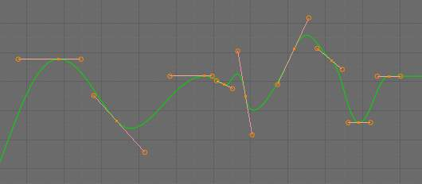
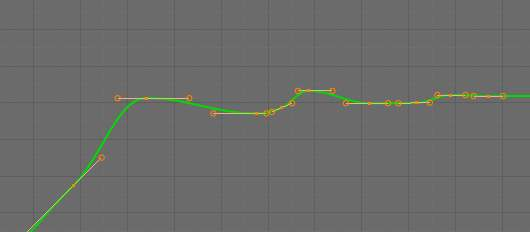
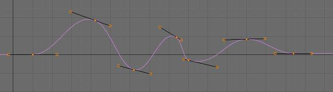

F-曲线¶
After animating some property in Blender using keyframes you can edit their corresponding curves. When something is “animated,” it changes over time. This curve in shown as something called an F-Curve. Basically what an F-Curve does is it a interpolates between two animated properties. In Blender, animating an object means changing one of its properties, such as an objects location, or its scale.
As mentioned, Blender’s fundamental unit of time is the “frame”, which usually lasts just a fraction of a second, depending on the frame rate of the scene. As animation is composed of incremental changes spanning multiple frames, usually these properties are not manually modified frame by frame, because:
- it would take ages!
- it would be very difficult to get smooth variations of the property (unless you compute mathematical functions and type a precise value for each frame, which would be crazy).
This is why nearly all direct animation is done using interpolation.
The idea is simple: you define a few Key Frames, which are multiple frames apart. Between these keyframes, the properties’ values are computed (interpolated) by Blender and filled in. Thus, the animators’ workload is significantly reduced.
{kind=link}
For example, if you have:
- a control point of value 0 at frame 0,
- another one of value 10 at frame 25,
- and you use linear interpolation,
then, at frame 5 we get a value of 2.
The same goes for all intermediate frames: with just two points, you get a smooth growth from (0 to 10) along the 25 frames. Obviously, if you would like the frame 15 to have a value of 9, you would have to add another control point (or keyframe)...
设置¶
F-curves have three additional properties, which control the interpolation between points, extension behavior, and the type of handles.
Interpolation Mode¶
参考
TYou have three choices:
- Constant
There is no interpolation at all. The curve holds the value of its last keyframe, giving a discrete (stairway) “curve”. Usually only used during the initial “blocking” stage in pose-to-pose animation workflows.
- Linear
This simple interpolation creates a straight segment between each neighbor keyframes, giving a broken line. It can be useful when using only two keyframes and the Extrapolation extend mode, to easily get an infinite straight line (i.e. a linear curve).
- 贝塞尔
The more powerful and useful interpolation, and the default one. It gives nicely smoothed curves, i.e. smooth animations!
贝塞尔.
{kind=link}
{kind=link}
{kind=link}
Remember that some F曲线 can only take discrete values, in which case they are always shown as if constant interpolated, whatever option you chose.
Extrapolation¶
参考
Shift-EExtrapolation defines the behavior of a curve before the first and after the last keyframes.
There are two basic extrapolation modes:
- Constant
The default one, curves before their first keyframe and after their last one have a constant value (the one of these first and last keyframes).
- Linear
曲线 ends are straight lines (linear), as defined by their first two keyframes (respectively their last two keyframes).
{kind=link}
{kind=link}
Additional extrapolation tools (e.g. the “Cycles” F-Modifier) are located in the F-Curve 修改器
Handle Types¶
There is another curve option quite useful for 贝塞尔-interpolated curves.
You can set the type of handle to use for the curve points V
- Automatic
Keyframes are automatically interpolated

Auto handles.
- Vector
Creates linear interpolation between keyframes. The linear segments remain if keyframe centers are moved. If handles are moved, the handle becomes Free.
- Aligned
Handle maintain rotation when moved, and curve tangent is maintained
- Free
Breaks handles tangents
- Auto Clamped
Auto handles clamped to not overshoot
{kind=link}
{kind=link}
{kind=link}
{kind=link}
Direction of time¶
Although F-curves are very similar to 贝塞尔曲线, there are some important differences.
For obvious reasons, a property represented by a Curve cannot have more than one value at a given time, hence:
- when you move a control point ahead of a control point that was previously ahead of the point that you are moving, the two control points switch their order in the edited curve, to avoid that the curve goes back in time
- for the above reason, it is impossible to have a closed F-Curve

Before moving the second keyframe. |
After moving the second keyframe. |
Editing Tools¶
By default, when new channels are added, the Graph Editor sets them to 编辑模式.
Selected channels can be locked by pressing Tab.
Many of the hotkeys are the same as the viewport ones, for example:
Gto grabRto rotateSto scaleBfor border select/deselect
And of course you can lock the transformation along the X (time frame) or Y
(value) axises by pressing X or Y during transformation.
For precise control of the keyframe position and value, you can set values in the Active Keyframe of the Properties Region.
变换 Snapping¶
When transforming keyframes with G, R, S,
the transformation can be snapped to increments.
Snap 变换ation to 1.0 Ctrl
Divide 变换ation by 10.0 Shift
Keyframes can be snapped to different properties by using the Snap Keys tool.
- Snap Keys
Shift-S - Current Frame
- Snap the selected keyframes to the Time Cursor.
- Cursor Value
- Snap the selected keyframes to the Cursor.
- Nearest Frame
- Snap the selected keyframes to their nearest frame individually.
- Nearest Second
- Snap the selected keyframes to their nearest second individually, based on the FPS of the scene.
- Nearest Marker
- Snap the selected keyframes to their nearest marker individually.
- Flatten Handles
Flatten the 贝塞尔 handles for the selected keyframes.
Flatten Handles snapping example.¶ 
Before Flatten Handles.

After Flatten Handles.
Mirror¶
Selected keyframes can be mirrored over different properties using the Mirror Keys tool.
- Mirror Keys
Shift-M - By Times Over Current Frame
- Mirror horizontally over the Time Cursor.
- By Values over Cursor Value
- Mirror vertically over the Cursor.
- By Times over Time 0
- Mirror horizontally over frame 0.
- By Values over Value 0
- Mirror vertically over value 0.
- By Times over First Selected Marker
- Mirror horizontally the over the first selected Marker.
Clean Keyframes¶
Clean Keyframes resets the keyframe tangents to their auto-clamped shape,
if they have been modified. Clean Keyframes O

FCurve after cleaning. |
Smoothing¶
参考
Alt-OThere is also an option to smooth the selected curves , but beware: its algorithm seems to be to divide by two the distance between each keyframe and the average linear value of the curve, without any setting, which gives quite a strong smoothing! Note that the first and last keys seem to be never modified by this tool.

FCurve after smoothing. |
{kind=link}
Sampling and Baking Keyframes¶
- Sample Keyframes
Shift-O Sampling a set a keyframes replaces interpolated values with a new keyframe for each frame.
FCurve before sampling.

FCurve after sampling.
- Bake 曲线
Alt-C - Baking a curve replaces it with a set of sampled points, and removes the ability to edit the curve.
{kind=link}